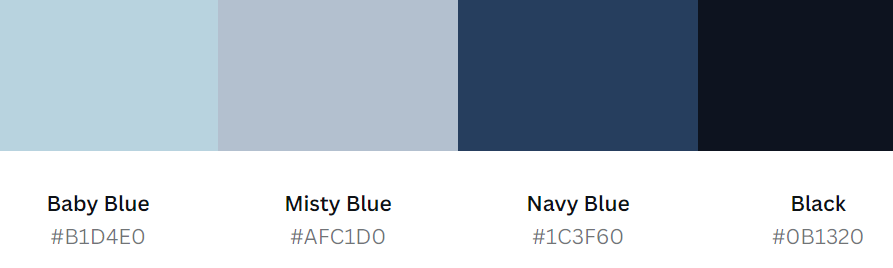

Final Project Proposal: Photography Gallery Website
This website will be a minimalistic and monochromatic platform dedicated to photography enthusiasts. It aims to showcase stunning photographic works in a clean and uncluttered format, allowing the art to speak for itself.
Audience
The intended audience for this website includes amateur and professional photographers, photography students, and art lovers who appreciate visual storytelling.
Design and Style
The design will focus on monochromic minimalism to keep the viewer's attention on the photographs. The color palette will be based on shades of blue, ranging from Baby Blue to Navy Blue, providing a calming effect and a strong visual hierarchy.
Inspired by the following websites:
Scope
The website will consist of three main pages:
- Home Page - Featuring a dynamic gallery of featured images.
- About Page - Offering insights into the website's mission and the photographers.
- Contact Page - Providing contact information and a form for inquiries.
Each page will incorporate elements of the chosen design and style to ensure a cohesive user experience.
Wireframe
Below are the links to the wireframe created, giving an overview of the layout and interaction: